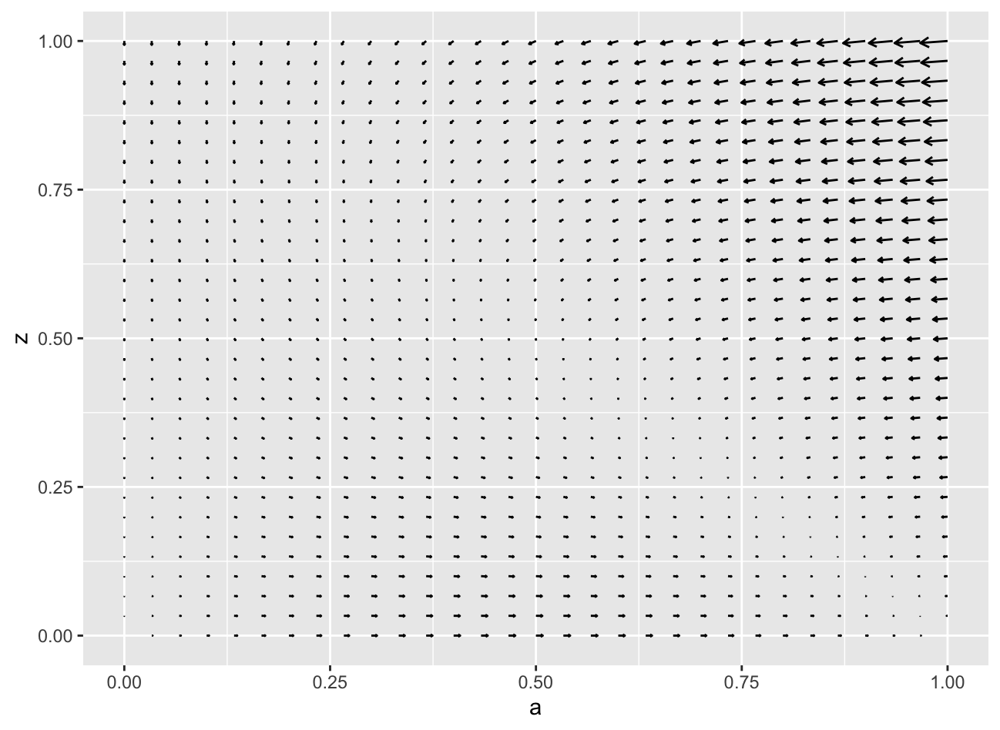
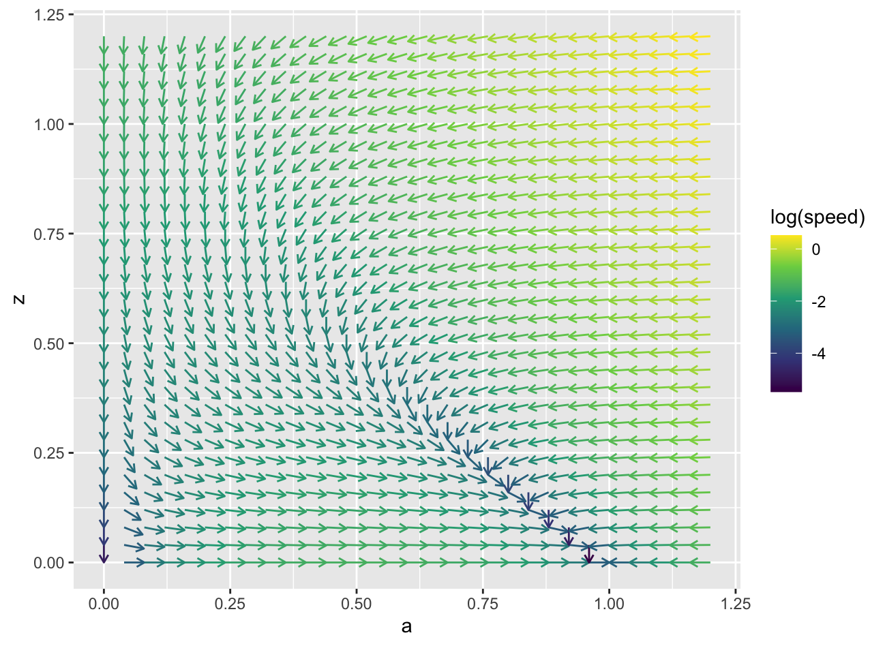
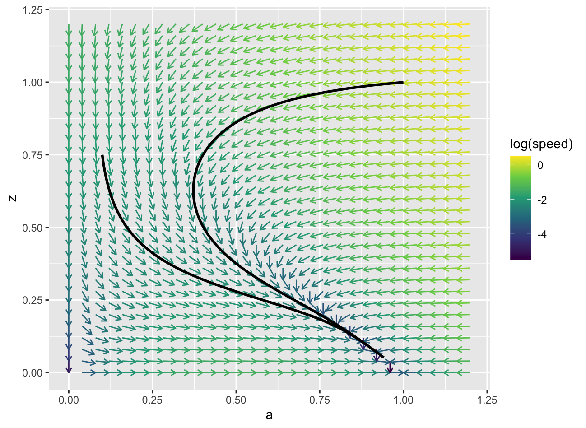
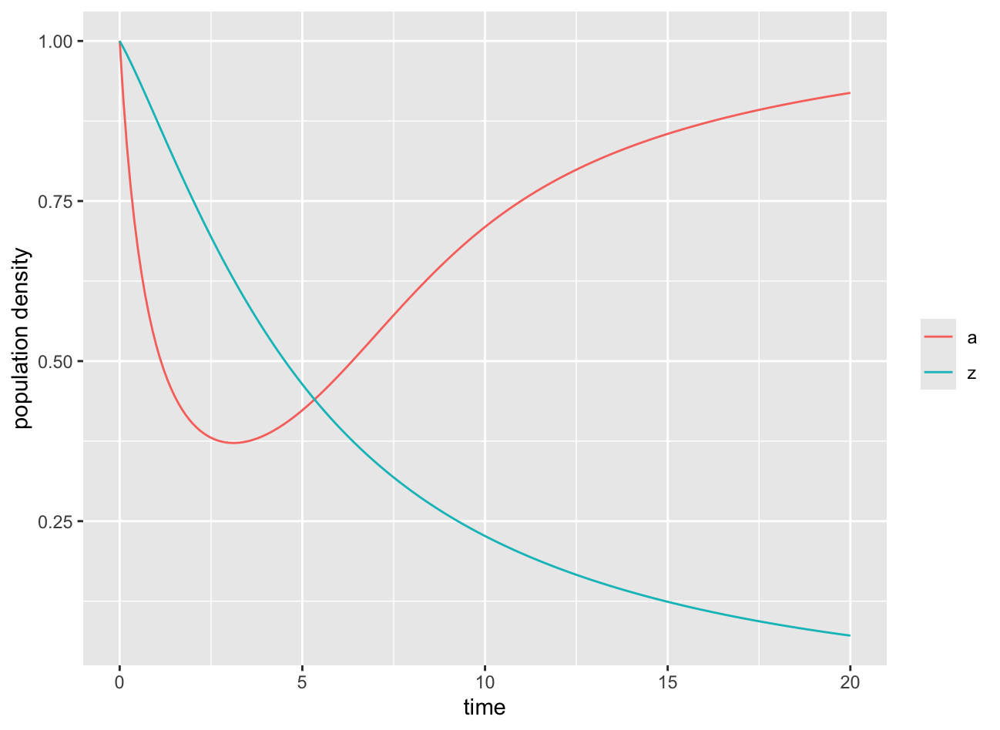
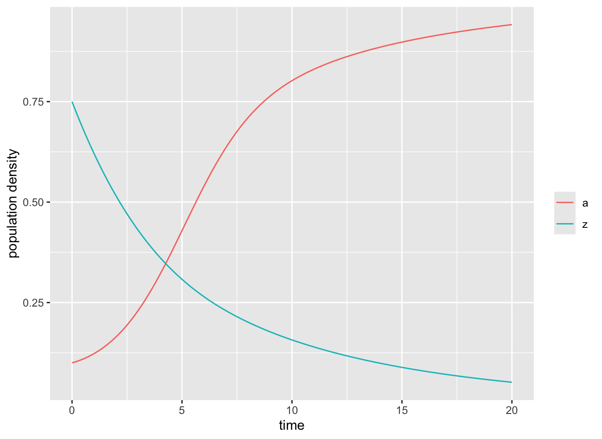
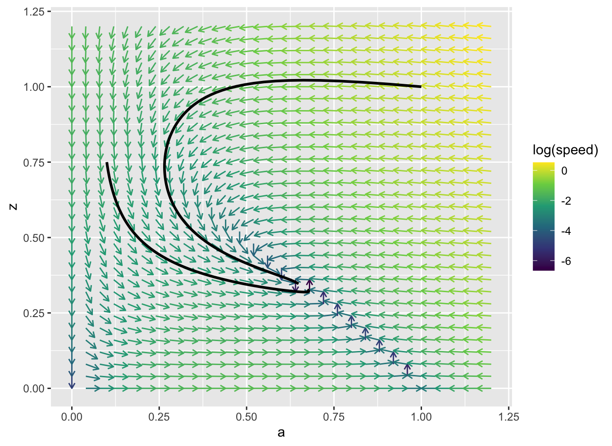
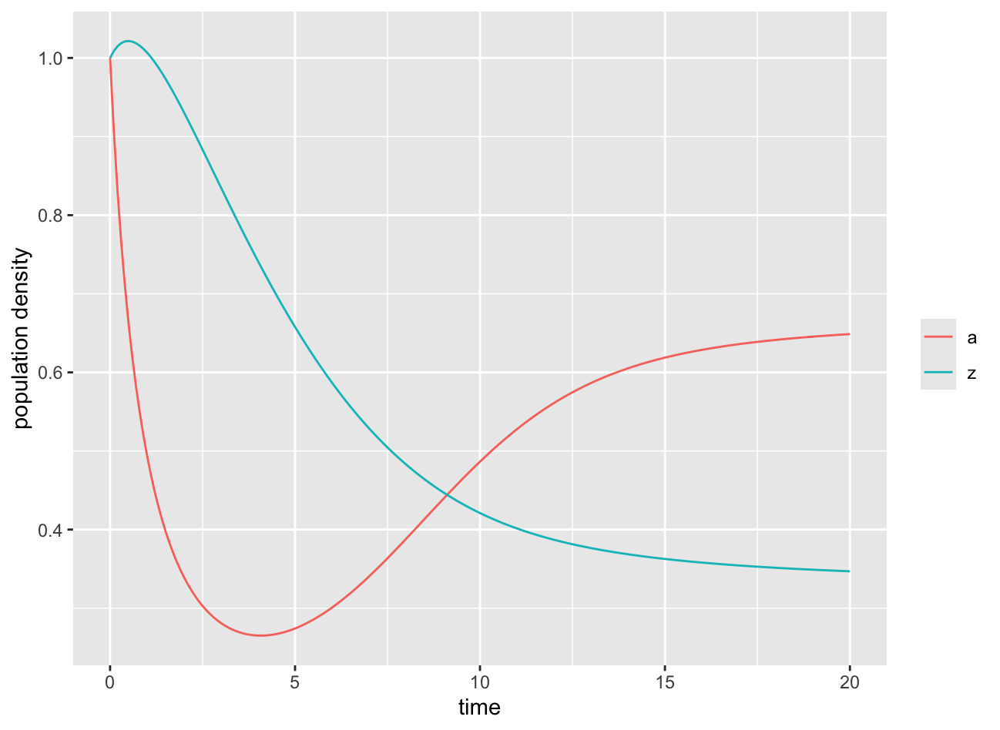
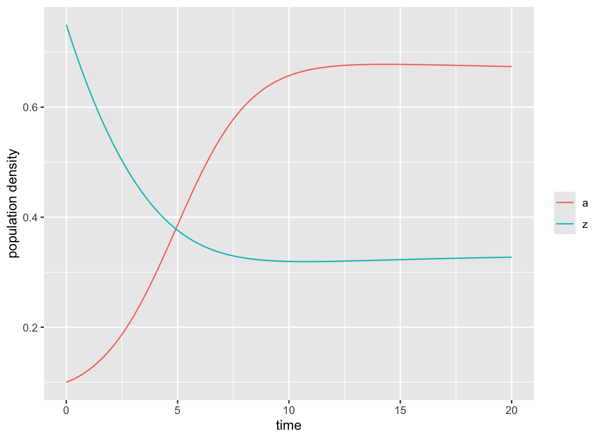

Section 4.4 Interacting Variables and Producer-Consumer Interactions
A single differential equation allows us to model a single state variable. Just as we could create a system of projection equations when dealing with a population involving multiple state variables, we can similarly create systems of differential equations for multiple state variables. In this section, we will focus on systems of differential equations involving two state variables, with a motivating example being the interactions between a producer species and consumer species.
Suppose that \(X\) and \(Y\) represent two state variables that interact, affecting each other’s rate of change. That is, the rate of change for \(X\) will be some function of both \(X\) and \(Y\) (and possibly time). The same will be true for \(Y\) but with a different function. That is, there are two functions \(f_1(t, X, Y)\) and \(f_2(t, X,Y)\) so that
\begin{align*}
X' \amp = f_1(t, X, Y),\\
Y' \amp = f_2(t, X, Y).
\end{align*}
The system is autonomous or time independent if the rate functions do not depend on time, in which case we write
\begin{align*}
X' \amp = f_1(X, Y),\\
Y' \amp = f_2(X, Y).
\end{align*}
For example, we will consider a producer species that uses photosynthesis to grow and produce its energy and biomass along with a consumer species that consumes individuals from the consumer species for its energy source. The rates of change of these two species will depend on the prevalence of the other species.
In this section, we will discuss some strategies for understanding how to generalize the ideas of the phase line, slope fields, and equilibria autonomous systems of differential equations involving two state variables. A phase line is used to understand solution behavior for a single variable. A phase plane will be the generalization to explore the dynamics for two variables. A slope field is a graphical representation showing the rate of change for a single variable with respect to time. A vector field allows us to generalize this to visualize relative rates of change for two variables simultaneously. Finally, equilibria will exist when both rate functions are equal to zero simultaneously. We will look for these equilibria by describing where individual rate functions equal zero—called nullclines—and find their points of intersection.
Subsection 4.4.1 The Phase Plane and Vector Fields
When we find solutions to the system of differential equations, our two state variables each will be functions of time. Each of them will have their own graph involving points \((t, X(t))\) or \((t,Y(t))\text{.}\) The idea of the phase plane is to consider the state variables as forming points in the plane, \((X,Y)\text{.}\) At each instant of time \(t\text{,}\) the value of \(X(t)\) will determine the \(x\)-coordinate of the point while the value \(Y(t)\) will determine the \(y\)-coordinate. As time passes, the values of \(X\) and \(Y\) change, and the corresponding state as a point will move around in the phase plane.
Consider the functions \(X(t) = \cos(t)\) and \(Y(t) = \sin(t)\text{.}\) We learned in trigonometry or calculus that the point \((\cos(t), \sin(t))\) represents a point on the unit circle corresponding to a radian angle of \(t\text{.}\) Consequently, the point \((X(t),Y(t))\) can be visualized as moving around the unit circle in the phase plane. The individual functions trace out the cosine or sine graphs in the \((t, X(t))\) and \((t,Y(t))\) graphs. But in the phase plane, \((X(t), Y(t))\) traces out the circle.
Instructions.
Use the time slider in the top left panel to vary the time to observe how the point in the phase plane moves.
Once we recognize that two functions of time can characterize a point in the phase plane that moves, we turn our attention to the derivatives of those functions. Each function \(X(t)\) and \(Y(t)\) has a derivative \(X'(t)\) and \(Y'(t)\) which represent the slope of the individual graphs in the \((t,X)\) and \((t,Y)\) planes. (Remember, these are not phase planes.) We are going to draw a vector in the phase plane anchored at \((X(t), Y(t))\) and ending at a point \((X(t) + \epsilon \cdot X'(t), Y(t) + \epsilon \cdot Y'(t))\text{,}\) for some positive scaling value \(\epsilon\text{.}\) That second point represents a point we would reach if we followed the tangent lines for \(X(t)\) and \(Y(t)\) for some amount of time \(\epsilon\text{.}\) This resulting vector is called a tangent vector. We say that \((X'(t), Y'(t))\) is the velocity vector, corresponding to choosing \(\epsilon = 1\text{,}\) and it gives the direction and speed of the tangent vector. These vectors will always be perfectly tangent to the curve the point follows in the phase space.
Instructions.
Use the time slider in the top left panel to vary the time to observe how the tangent vector is related to the curve the point follows in phase space.
Where a single autonomous differential equation \(X' = f(X)\) defines a slope field that depends only on \(X\) (and not \(t\)), an autonomous system of two differential equations
\begin{align*}
X' \amp = f_1(X,Y), \\
Y' \amp = f_2(X,Y),
\end{align*}
defines a vector field. At each point in the \((X,Y)\) phase plane, the functions \((f_1,f_2)\) define velocity vectors based on the location of that point. We then would be looking a solution that consists of two functions \(X(t)\) and \(Y(t)\) such that the resulting flow of the point \((X(t),Y(t))\) through the phase plane always has its velocity vector exactly match the vector field’s velocity.
For practical visualization reasons, a vector field is typically rescaled so that the vectors don’t overlap. Longer vectors correspond to faster changes in the functions. Shorter vectors correspond to slowly changing functions.
An initial condition represents a starting point in the phase plane at some specified time. If we said \((X(t_0), Y(t_0)) = (a,b)\text{,}\) then the point \((a,b)\) is the initial point at the time \(t = t_0\text{.}\) This would require that our solution functions \(X(t)\) and \(Y(t)\) have graphs that individually pass through \((t_0, a)\) and \((t_0,b)\text{,}\) respectively.
Instructions.
Drag the initial point in the phase plane to select different solutions. Drag the point \(t\) in the \(X\) graph plane to follow the individual solution and visualize the corresponding tangent vectors.
Subsection 4.4.2 Systems of Differential Equations
We now return to the idea of an autonomous (time-independent) system of differential equations,
\begin{align*}
X' \amp = f_1(X, Y),\\
Y' \amp = f_2(X, Y).
\end{align*}
The pair of functions \(f_1\) and \(f_2\) define a vector field. At each point in the phase plane \((X,Y)\text{,}\) the first function \(f_1\) gives the rate of change in the direction of the first variable and \(f_2\) gives the rate of change in the direction of the second. Just as we could draw a slope field for a single differential equation in the \((t,X)\) plane, a vector field allows us to visualize the flow of the differential equation in the \((X,Y)\) phase plane. Time does not directly appear in the vector field, but the lengths of the vectors are proportional to the speed of change, so shorter vectors correspond to regions of slower change.
To illustrate the idea of a system of differential equations, we will consider a model of two populations, a producer and a consumer. As a specific example, consider algae as a producer and zooplankton as a consumer. The algae generates biomass through photosynthesis. The zooplankton consume the algae in order to produce its biomass.
In the absence of any zooplankton, the algae would behave like a simple population that grows subject to the natural constraints of the environment. When zooplankton are introduced, we would expect that this introduces a new loss term for the algae similar to our approach for harvesting a population, except that the total rate of harvesting is going to be proportional to the population of the zooplankton. The proportionality term represents the rate of algae consumption per individual zooplankton (or per unit measure of zooplankton population) and this will be some function of the algae density.
The zooplankton, on the other hand, require the presence of algae to survive. The intrinsic per capita growth rate for zooplankton without algae is therefore necessarily a negative value, corresponding to a population in decline. This per capita growth rate will be a function of the algae population density that is increasing such that increased algae density corresponds to a higher per capita growth rate. It will typically have the same functional form as the proportionality coefficient for harvesting, since the improved growth of zooplankton is typically directly related to the ability of zooplankton to consume algae.
To describe our model, we first introduce our state variables. Let \(A\) represent the algae population density and let \(Z\) represent the zooplankton population density. We model the algae population with logistic growth coupled with a zooplankton consumption term proportional to the product \(A \cdot Z\text{,}\) such that the consumption of an individual zooplankton is itself proportional to the density of algae around it. We model the zooplankton population with a per capita growth rate that is negative for \(A=0\) but which increases proportionally with \(A\text{.}\) The system of differential equations is given by
\begin{align*}
A' \amp = r_A A \cdot \left(1 - \frac{A}{K}\right) - b A Z,\\
Z' \amp = (-r_Z + c A) \cdot Z.
\end{align*}
The model has five different model parameters. It can be overwhelming to try to explore the possible outcomes with so many parameters. As we have seen in the past, some of the parameters can be used to set natural units of scale for the different variables. We have two state variables plus time, giving three possible units of scale. We might be able to rewrite our model equations using appropriate units to go from five parameters to only two in a nondimensionalized version.
To create our nondimensionalized equations, we think of each state variable (\(A\) and \(Z\)) as a unit of scale (\(\hat{A}\) and \(\hat{Z}\)) times a dimensionless numerical variable (\(a\) and \(z\)), giving us \(A = hat{A} \cdot a\) and \(Z = \hat{Z} \cdot z\text{.}\) Similarly, we have our time variable \(t\) measured in terms of a time scale \(T\) and a dimensionless variable \(\tau\text{.}\) The derivatives \(A'\) and \(Z'\) will be rewritten as dimensionless derivatives \(\dot{a} = \frac{da}{d\tau}\) and \(\dot{z} = \frac{dz}{d\tau}\) with units of measure \(\frac{\hat{A}}{T}\) and \(\frac{\hat{Z}}{T}\text{,}\) respectively. In terms of these units, our differential equations become
\begin{align*}
\frac{\hat{A}}{T} \dot{a} \amp = r_A \hat{A} a \cdot \left(1 - \frac{\hat{A} a}{K}\right) - b \hat{A} \hat{Z} a z,\\
\frac{\hat{Z}}{T} \dot{z} \amp = (-r_Z + c \hat{A} a) \cdot \hat{Z} z.
\end{align*}
Rewriting these equations so that only \(\dot{a}\) and \(\dot{z}\) are on the left sides of the equations, we get
\begin{align*}
\dot{a} \amp = r_A T a \cdot \left(1 - \frac{\hat{A} a}{K}\right) - b T \hat{Z} a z,\\
\dot{z} \amp = (-r_Z T + c T \hat{A} a) \cdot z.
\end{align*}
At this point, the strategy is to make choices for our scales so that terms involving parameters simplify to simple numerical values. For example, we see that \(T\) appears in the product \(r_A T a\text{,}\) so if we choose \(T = \frac{1}{r_A}\text{,}\) the term will be rewritten as just \(a\text{.}\) Similarly, the scale \(\hat{A}\) appears in the fraction \(\frac{\hat{A} a}{K}\text{,}\) so the choice \(\hat{A} = K\) will result in the term also being rewritten as just \(a\text{.}\) The scale \(\hat{Z}\) only appears in the term \(b T \hat{Z} a z\text{.}\) We already have \(T = \frac{1}{r_A}\text{,}\) so choosing \(\hat{Z} = \frac{1}{bT} = \frac{r_A}{b}\) results in that term becoming just \(az\text{.}\)
The nondimensionalized system of differential equations with this choice of scales is therefore written,
\begin{align*}
\dot{a} \amp = a \cdot \left(1 - a\right) - a z,\\
\dot{z} \amp = (- \frac{r_Z}{r_A} + \frac{c K}{r_A} a) \cdot z.
\end{align*}
This new system depends only on two parameters, \(\alpha = \frac{r_Z}{r_A}\) and \(\beta = \frac{cK}{r_A}\text{.}\) By exploring different choices for those parameters, we can understand the different possible outcomes predicted by the original model.
We will let a computer help us visualize the dynamics by plotting a vector field along with solution curves, called trajectories, in the phase plane. To find the vector field, our use of
geom_quiver will be modified in that the displacement for our arrows will depend on both rates of change. In the mapping = aes() call, we will need u assigned to the values of the \(a\) rate of change and v assigned to the values of the \(z\) rate of change. To find our solution curves, we will again use the ode function from the deSolve library. The primary difference is that we now have two state variables, so the init_state argument will need to provide initial values for each of the variables \(a\) and \(z\text{.}\) Our rate function will also be required to return a list of two different rates.One of the major challenges with visualizing vector fields is that the length of the vectors can be exceptionally small for many of the arrows on the grid. This makes it difficult to see what is happening.
# Load the libraries
library(ggplot2)
library(ggquiver)
library(deSolve)
library(dplyr)
# Define our model parameters
my_params <- c(alpha = 0.2, beta = 0.1)
# Create a phase plane grid of points for vector field
grid_pts <- expand.grid(a = seq(0, 1,length=31),
z = seq(0, 1, length=31))
# Define the simple rate calculations for vector field
f1 <- function(a, z, params) {
with(as.list(params), a*(1-a)-a*z)
}
f2 <- function(a, z, params) {
with(as.list(params), (-alpha+beta*a)*z)
}
vec_field_data <- grid_pts |>
mutate(aRate = f1(a,z, my_params),
zRate = f2(a,z, my_params))
vec_field_graph <- ggplot() +
geom_quiver(data = vec_field_data,
mapping = aes(x = a, y = z,
u = aRate,
v = zRate)
)
show(vec_field_graph)

We can improve our visualization by rescaling all of the rates by the length of the vectors to provide directions of the same length, and then using color to distinguish the actual speed of change. Because the speed varies on the grid over several orders of magnitude, we visualize the speed using the logarithm of the speed.
# Load the libraries
library(ggplot2)
library(ggquiver)
library(deSolve)
library(dplyr)
# Define our model parameters
my_params <- c(alpha = 0.2, beta = 0.1)
# Create a phase plane grid of points for vector field
grid_pts <- expand.grid(a = seq(0, 1.2,length=31),
z = seq(0, 1.2, length=31))
# Define the simple rate calculations for vector field
f1 <- function(a, z, params) {
with(as.list(params), a*(1-a)-a*z)
}
f2 <- function(a, z, params) {
with(as.list(params), (-alpha+beta*a)*z)
}
vec_field_data <- grid_pts |>
mutate(aRate = f1(a,z, my_params),
zRate = f2(a,z, my_params)) |>
mutate(speed = sqrt(aRate^2 + zRate^2)) |>
mutate(aDir = aRate / speed,
zDir = zRate / speed)
vec_field_graph <- ggplot() +
geom_quiver(data = vec_field_data,
mapping = aes(x = a, y = z,
u = aDir,
v = zDir,
color = log(speed))
) +
scale_color_continuous(type = "viridis")
show(vec_field_graph)

We can now add trajectories to our phase plane. Based on the vector field, we might choose some relevant initial conditions. For this first setting, we might be interested in what happens if we start with a lot of both organisms, which in the nondimensionalized values might be \((a,z) = (1,1)\text{.}\) It might also be interesting to visualize what happens if we start on the left side of the plane, say at \((a,z) = (0.1, 0.75)\text{.}\) Continuing from the previous listing, we add some additional code.
We also want to visualize the solutions as functions of time. Each set of initial conditions results in a different pair of functions, so we generate graphs of solutions within our loop.
# Having already defined parameters and the vector field
# Define the rate function for ode
# Use the previously defined functions
rateFcn <- function(t, state, params) {
with(as.list(state), {
a_rate <- f1(a,z,params)
z_rate <- f2(a,z,params)
list(c(a_rate, z_rate))
})
}
times <- seq(0, 20, by=0.1)
init_vals <- list(a0 = c(1, 0.1), z0 = c(1, 0.75))
# Start with the vector field
trajectory_graph <- vec_field_graph
# Loop through the different initial states to create graph
num_conditions <- length(init_vals $ a0)
for (i in 1:num_conditions) {
# Find the diff eqn solutions
soln <- ode(c(a = init_vals $ a0[i],
z = init_vals $ z0[i]),
times,
rateFcn,
my_params)
# Add trajectories to the graph
trajectory_graph <- trajectory_graph +
geom_path(data = soln,
mapping = aes(x = a, y = z),
color = "black",
linewidth = 1)
# Solution graph
solution_graph <- ggplot(data = soln) +
geom_line(mapping = aes(x=time, y=a, color="a")) +
geom_line(mapping = aes(x=time, y=z, color="z")) +
labs(x = "time", y = "population density") +
scale_color_discrete(breaks = c("a", "z"),
name = "")
show(solution_graph)
}
# Show the results
show(trajectory_graph)



For both of our initial conditions for this first choice of model parameters, we see that \(a\) appears to be heading toward a non-zero equilibrium while \(z\) appears to be heading toward zero.
Repeating the previous calculations with an adjustment in parameter values to use
my_params <- c(alpha = 0.2, beta = 0.3), but otherwise not changing the scripts, we obtain a new vector field with trajectories. This time, both of our initial conditions are showing both \(a\) and \(z\) converging to nonzero equilibrium values. For the parameter value \(\alpha = 0.2\text{,}\) there must be some threshold for \(\beta\) such that for larger values of \(\beta\text{,}\) both zooplankton and algae are able to survive, but below that threshold, the zooplankton die off and the algae goes to its own nonzero equilibrium. We will explore this more methodically in a later section.


An interactive figure is provided below where you can explore the dynamics by adjusting the two free parameters as well as the initial condition.
Instructions.
Use the sliders to change model parameters, and change the initial point.